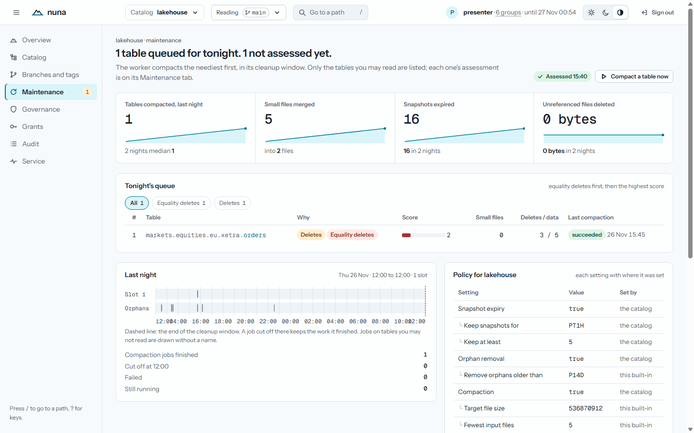

Maintenance
Maintenance is the work the maintenance worker does on tables by the policy the server keeps: snapshot expiry, manifest rewrites, compaction on need, orphan scans, pending deletions and purges.
What it is
Iceberg tables gather snapshots, small files and files no snapshot reaches any more. Maintenance keeps them in shape. The server keeps a maintenance policy for each catalog, namespace and table, and the maintenance worker carries it out. The worker is an Iceberg REST client signed in as a maintenance principal, listed in nuna.security.maintenance-principals, whose group needs write on each catalog.
How it works
Scans
Every 10 minutes by default (nuna.maintenance.scan-interval), the worker reads its work list from GET /management/v1/maintenance/work. A scan reads the storage prefixes it may act in, then the refs to warn of or end, then each table, then the purges and deletions that are due, then the requests made by people. For each table the scan gives a health score: 1 when a figure reaches its threshold, 2 when it reaches twice the threshold.
The jobs
- Snapshot expiry
- Removes snapshots older than
snapshot-expiry.max-snapshot-age, keeping at leastsnapshot-expiry.min-snapshots-to-keep. Runs at any hour. - Manifest rewrite
- Rewrites a table's manifests once it has
manifest-rewrite.min-manifestsof them. Runs at any hour. - Compaction
- Runs when a table needs it, for one of three reasons: small files (a partition holds at least
compaction.min-input-filesfiles under 75% of the target size), deletes (more delete files thancompaction.delete-file-ratioof the data files), or any equality deletes. Tables with equality deletes go first, then the highest score. Each compaction is a Kubernetes Job,nuna-compact-uuid-date, that runs Spark'srewrite_data_fileswith partial progress, and must end by the end of the cleanup window. At most 2 run at once. Compaction is off until the worker is given a compaction image. - Orphan scan
- Finds files under a table's location that no snapshot reaches and that are older than
orphan-removal.older-than. Runs at most once a day per table, inside the cleanup window. - Pending deletions
- Files the worker will delete are recorded first, with a not-before time of now plus the database's point-in-time recovery window (
nuna.governance.pitr-window, 7 days by default), and deleted when due, so a database restored to any point in that window still finds its files. - Purges
- A dropped table past its restore window is claimed, its files deleted in batches of 1,000, and the purge completed. Dropping, restoring and purging explains this.
The cleanup window
Compaction and orphan scans run only inside the cleanup window, nuna.maintenance.cleanup-window.start, .end and .zone. The window has no default: the worker refuses to start without it. Quote the times in YAML so they are read as text.
The policy
Every job is off until a policy turns it on. A table's policy is resolved from the built-in defaults, then nuna.governance.maintenance-defaults, then the catalog's, the namespaces' above the table, and the table's own, the nearest winning.
| Key | Default |
|---|---|
snapshot-expiry.enabled | false |
snapshot-expiry.max-snapshot-age | P5D |
snapshot-expiry.min-snapshots-to-keep | 1 |
orphan-removal.enabled | false |
orphan-removal.older-than | P14D |
compaction.enabled | false |
compaction.target-file-size-bytes | 536870912 |
compaction.min-input-files | 5 |
compaction.delete-file-ratio | 0.3 |
manifest-rewrite.enabled | false |
manifest-rewrite.min-manifests | 100 |
Guardrails bound every policy. A maximum snapshot age below the minimum snapshot age is raised to it. An orphan age must be longer than the point-in-time recovery window plus a day; a policy that sets less is refused with 400 "orphan-removal.older-than must be longer than the database PITR window …". A DR freeze turns all four jobs off for the frozen tables, and a legal hold turns off expiry and orphan removal.
Maintenance on request
A principal with modify on a table can ask for a compaction or an orphan scan now: POST …/tables/table/maintenance/requests with {"job": "compaction"} or {"job": "orphan-scan"} answers 202. The worker starts it at its next scan, even outside the cleanup window, and stops it 2 hours after it starts if it has not finished (request-deadline).
What it guarantees and what it does not
- Every change the worker makes to a table is a commit through the server, judged by the same rules as any engine's.
- No file is deleted before the point-in-time recovery window has passed, and only the worker's own storage identity deletes.
- Files a catalog branch or tag reaches are kept. Maintenance runs on main only.
- Maintenance does nothing a policy has not turned on.
Where you see it
- The console's Maintenance page and a table's Maintenance tab.
- Maintenance API and Worker endpoints.
- Maintenance worker settings and Maintenance nights.

Limits
- At most 2 compaction Jobs at once by default.
- One orphan scan per table per day.
- A job asked for on request runs for at most 2 hours.
See also
- Set a catalog's maintenance policy: turn the jobs on.
- Compact a table or scan for orphans now: maintenance on request.
- Table health: what each figure of the score means.
- Install the maintenance worker: its chart and grants.
How this page was checked
Written from catalog-maintenance/README.md, catalog-maintenance/src/main/java/nuna/maintenance/WorkerSettings.java, catalog-server/src/main/java/nuna/catalog/server/governance/MaintenancePolicy.java, catalog-server/src/main/java/nuna/catalog/server/governance/GovernanceSettings.java, and docs/observability/table-health.md, checked against commit b3e8582f on 2026-11-26.
Nothing on this page was run.